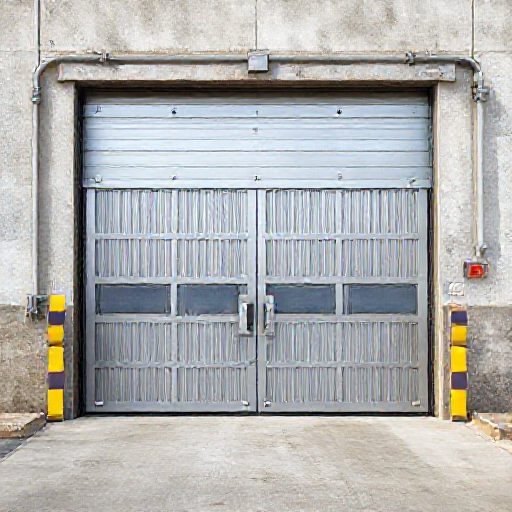

HAM Estructuras Metalicas
Fabricacion y montaje de estructuras metalicas, herreria y soluciones a medida en Menorca.
Av. Circunvalacio, 11, Poligono de Sant Lluis, 07710 Sant Lluis, Menorca
info@hamenorca.com - +34 971 35 20 18 - WhatsApp +34 669 769 541
www.hamenorca.com
Presupuesto Técnico: Fabricación e Instalación de 4 Puertas Industriales de Acero Inoxidable y PRFV - Ciutadella
Presupuesto para la fabricación e instalación en Ciutadella de 4 puertas industriales abatibles manuales de 3,45 x 2,96 m (2 unidades con puerta peatonal integrada y 2 unidades sin peatonal). Estructura construida en acero inoxidable AISI 316 con tratamiento de pintura epoxi/poliuretano apto para ambiente marino C4/C5 de Menorca. Revestimiento por ambos lados mediante placas de fibra de vidrio (PRFV) pegadas y remachadas. Incluye herrajes de inox, transporte y montaje en obra con camión grúa. Margen industrial e imprevistos distribuidos proporcionalmente en las partidas de obra.

Email: | Tel.:
Obra: Ciutadella
NIF/CIF: A95113361 | Referencia: 4 Puertas de PRFV y estructura de acero inox
Desglose de partidas
| Capitulo | Concepto | Cant. | Ud. | EUR/Ud. | Importe |
|---|---|---|---|---|---|
| Diseno | Toma de medidas, ingeniería técnica y planos de taller Replanteo técnico en Ciutadella, cálculo de bastidores de inox, diseño de detalles para integración de puertas peatonales y modulado de fijación para placas de PRFV. | 12.00 | h | 38.52 | 462.24 |
| Materiales | Perfilería y tubos estructurales en Acero Inoxidable AISI 316 Tubos rectangulares y perfiles de refuerzo en inox AISI 316 aptos para exterior marino C5-M en Menorca para bastidores de 4 puertas (3,45 x 2,96 m). | 580.00 | kg | 9.35 | 5423.00 |
| Materiales | Placas de poliéster reinforced con fibra de vidrio (PRFV) Suministro de paneles PRFV para cerramiento y revestimiento ciego por ambos lados de las 4 puertas (81,70 m² totales). | 81.70 | m2 | 159.35 | 13018.90 |
| Materiales | Herrajes industriales, bisagras pesadas y cerraduras en inox Conjunto de bisagras regulables de gran carga en AISI 316, pasadores verticales de suelo/dintel, y 2 sets de cerraduras/manillas inoxidables para las puertas peatonales. | 1.00 | lote | 831.23 | 831.23 |
| Materiales | Adhesivo estructural, remaches AISI 316 y consumibles TIG Adhesivo de poliuretano/silano modificado para pegado de PRFV por ambas caras a la estructura inox, remaches ciegos AISI 316, hilo de soldar TIG y gas argón. | 1.00 | lote | 476.44 | 476.44 |
| Fabricacion | Mano de obra de taller y ensamblaje multimaterial Corte, preparación de bordes, soldadura TIG de bastidores en inox, fabricación e integración de las 2 puertas peatonales, pegado y remachado de placas PRFV por ambas caras. | 84.00 | h | 37.25 | 3129.00 |
| Tratamiento | Sistema de pintura anticorrosivo C4/C5 sobre inox Preparación superficial (matizado/desengrasado), imprimación epoxi de adherencia (wash primer) y acabado en esmalte de poliuretano alifático del color RAL a elegir. | 1.00 | lote | 1165.75 | 1165.75 |
| Transporte | Transporte de elementos de gran formato a Ciutadella Flete y transporte protegido de las 4 puertas industriales desde taller en Sant Lluís hasta la obra en Ciutadella. | 1.00 | lote | 263.56 | 263.56 |
| Montaje | Mano de obra de instalación y aplomado en obra Montaje de bastidores y hojas en Ciutadella, fijación mediante anclajes químicos con varilla inoxidable A4, nivelación y regulación de cerraduras/peatonales. | 24.00 | h | 37.25 | 894.00 |
| Montaje | Servicio de camión grúa de pluma para maniobras de elevación Alquiler de camión pluma para la descarga, elevación e inserción segura de las hojas industriales de gran formato en sus huecos. | 1.00 | lote | 474.88 | 474.88 |
| Riesgo | Reserva de imprevistos dimensionales e interfaces en obra Margen para pequeños ajustes in situ de encuentros de solera, pilares existentes y sellados perimetrales (distribuido proporcionalmente en las demás líneas). | 0.00 | lote | 0.00 | 0.00 |
Supuestos
- Se presupuesta acero inoxidable calidad AISI 316 (A4) por defecto al tratarse de una instalación en exterior en Menorca (criterio C4/C5).
- El revestimiento de PRFV se aplica por ambas caras de cada hoja (cara exterior e interior), duplicando la superficie total a 81,70 m².
- La preparación previa del hueco de obra, solera nivelada y líneas de acometida/fijación en Ciutadella corren a cargo de la propiedad.
- El acabado de las placas de PRFV se considera plano/liso comercial según lo indicado por el cliente.
- El permiso de ocupación de vía pública para el camión grúa en Ciutadella (si se requiere) no está incluido en este importe.
Riesgos y datos pendientes
- Diferencia de coeficientes de dilatación térmica entre el acero inoxidable y las placas de PRFV en exposición solar directa continua.
- Posible necesidad de andamiaje auxiliar o corte de calle si el acceso del camión grúa en Ciutadella presenta restricciones de espacio.
- Comprobación del plomo de los pilares existentes en obra; un desplome significativo requerirá calzos inoxidables adicionales.
- ¿Confirmar el código de color RAL específico para la pintura de poliuretano sobre la estructura de inoxidable?
- ¿La estructura de soporte existente en obra (pilares/dintel en Ciutadella) es de hormigón/acero y está lista para recibir los anclajes químicos?
- ¿Las 2 puertas peatonales requieren algún sentido de apertura (interior/exterior o izquierda/derecha) o barra antipánico especial?